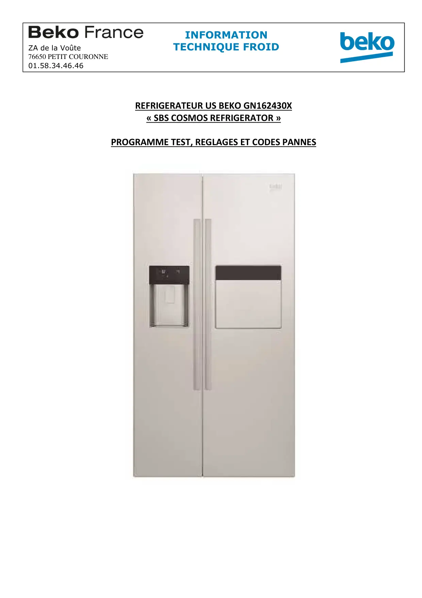
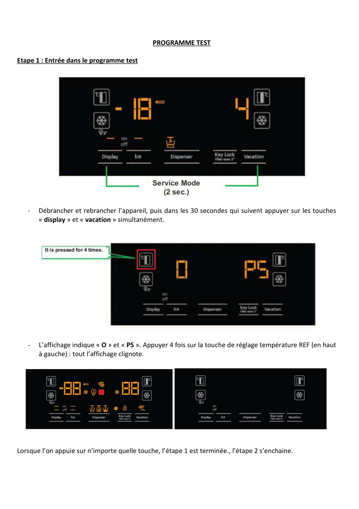
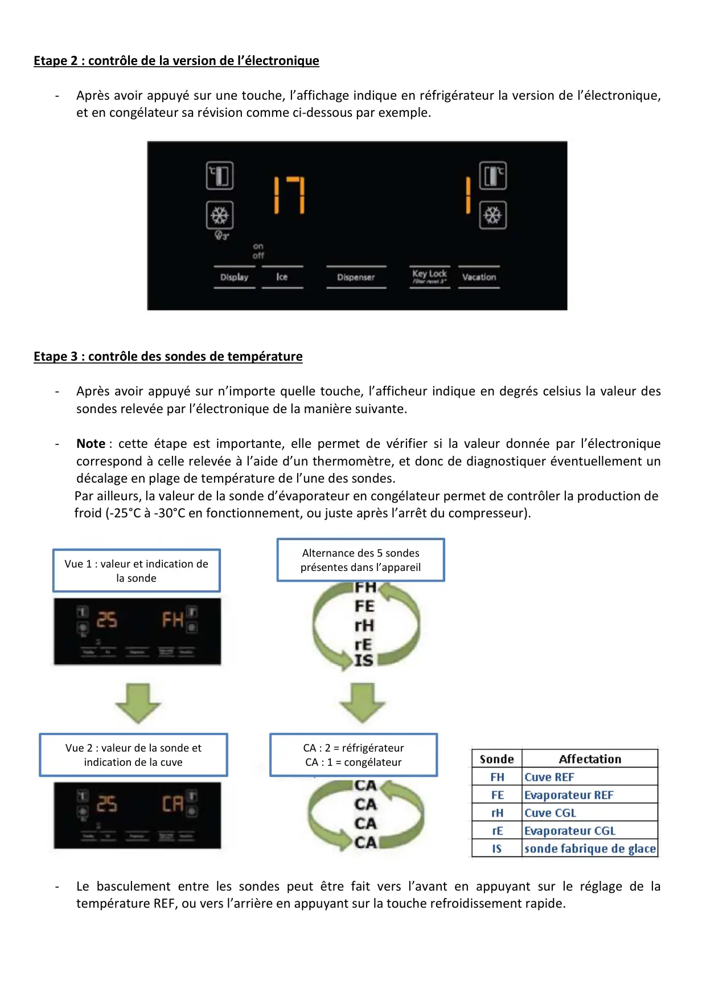
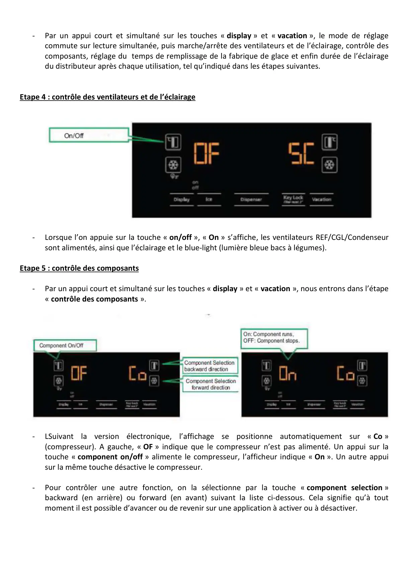
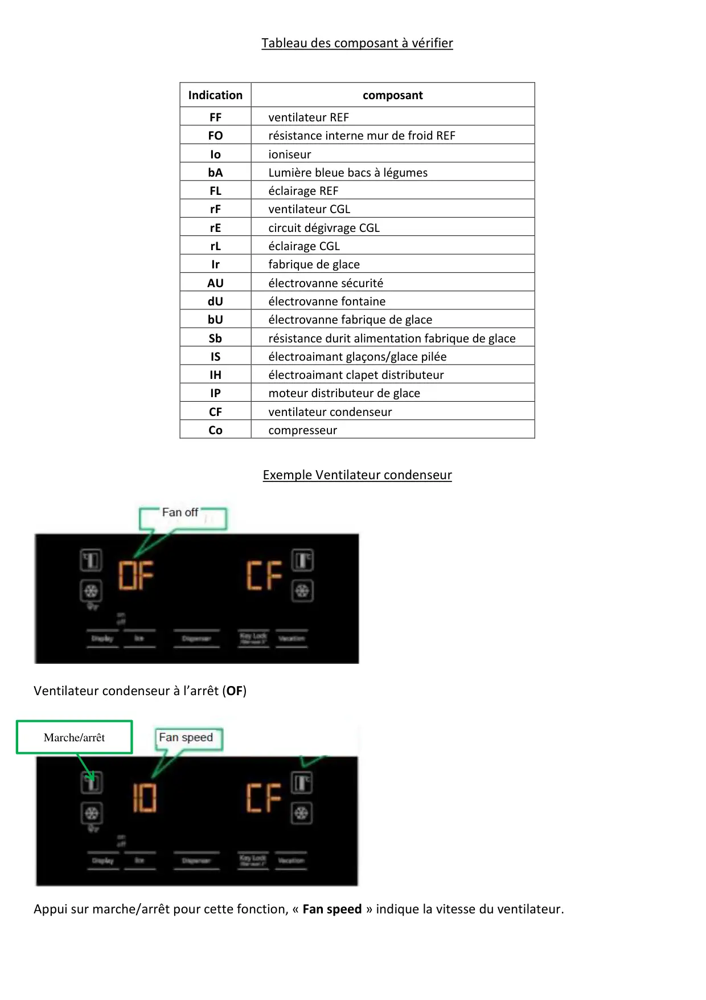
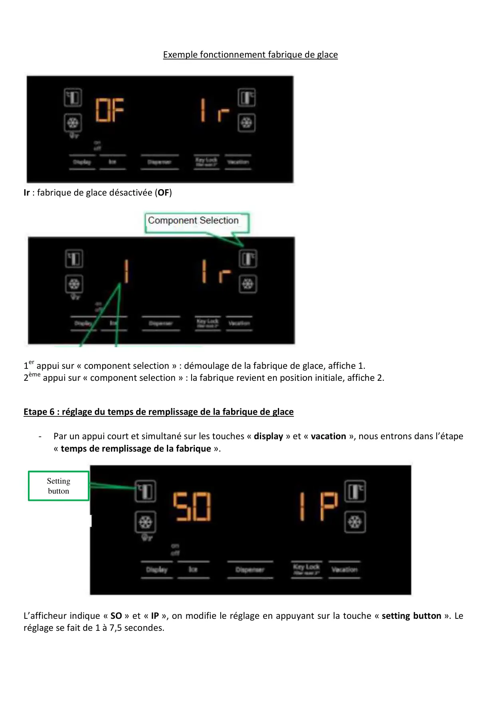
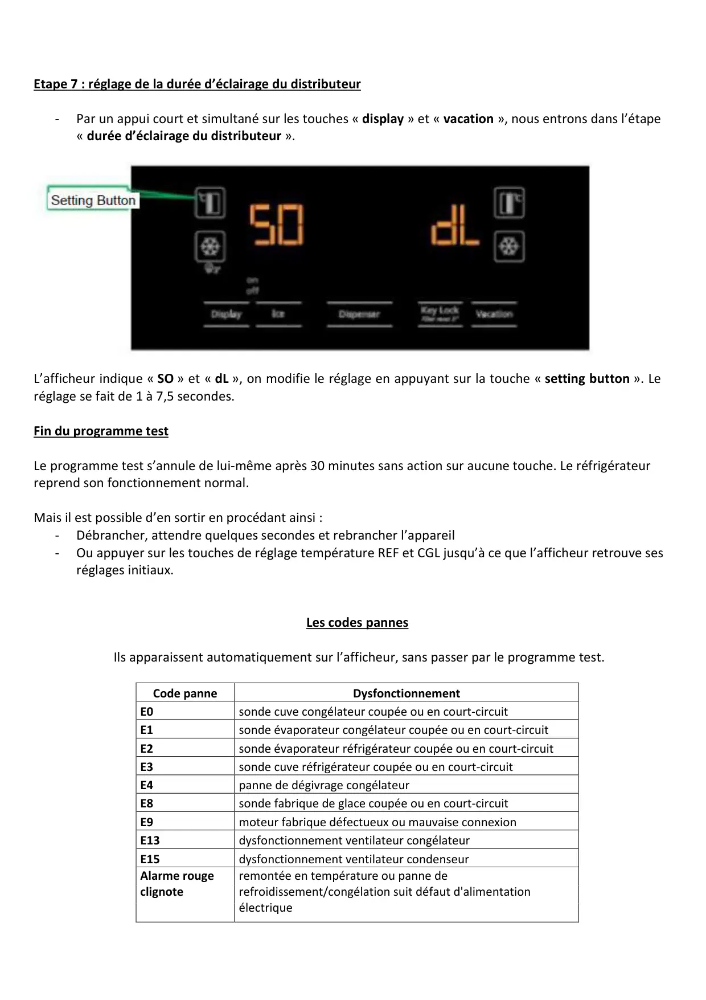

ProgrTest GN162430 SBS Cosmos

REFRIGERATEUR US BEKO GN162430X« SBS COSMOS REFRIGERATOR »PROGRAMME TEST, REGLAGES ET CODES PANNESINFORMATIONZA de la Voûte TECHNIQUE FROID76650 PETIT COURONNE01.58.34.46.46
1 / 7
PROGRAMME TESTEtape 1 : Entrée dans le programme test-Débrancher et rebrancher l’appareil, puis dans les 30 secondes qui suivent appuyer sur les touches« display » et « vacation » simultanément.-L’affichage indique « O » et « P5 ». Appuyer 4 fois sur la touche de réglage température REF (en hautà gauche) : tout l’affichage clignote.Lorsque l’on appuie sur n’importe quelle touche, l’étape 1 est terminée., l’étape 2 s’enchaine.
2 / 7
Etape 2 : contrôle de la version de l’électronique-Après avoir appuyé sur une touche, l’affichage indique en réfrigérateur la version de l’électronique,et en congélateur sa révision comme ci-dessous par exemple.Etape 3 : contrôle des sondes de température-Après avoir appuyé sur n’importe quelle touche, l’afficheur indique en degrés celsius la valeur dessondes relevée par l’électronique de la manière suivante.-Note : cette étape est importante, elle permet de vérifier si la valeur donnée par l’électroniquecorrespond à celle relevée à l’aide d’un thermomètre, et donc de diagnostiquer éventuellement undécalage en plage de température de l’une des sondes.Par ailleurs, la valeur de la sonde d’évaporateur en congélateur permet de contrôler la production defroid (-25°C à -30°C en fonctionnement, ou juste après l’arrêt du compresseur).-Le basculement entre les sondes peut être fait vers l’avant en appuyant sur le réglage de latempérature REF, ou vers l’arrière en appuyant sur la touche refroidissement rapide.Vue 1 : valeur et indication dela sondeAlternance des 5 sondesprésentes dans l’appareilVue 2 : valeur de la sonde etindication de la cuveCA : 2 = réfrigérateurCA : 1 = congélateur
3 / 7
-Par un appui court et simultané sur les touches « display » et « vacation », le mode de réglagecommute sur lecture simultanée, puis marche/arrête des ventilateurs et de l’éclairage, contrôle descomposants, réglage du temps de remplissage de la fabrique de glace et enfin durée de l’éclairagedu distributeur après chaque utilisation, tel qu’indiqué dans les étapes suivantes.Etape 4 : contrôle des ventilateurs et de l’éclairage-Lorsque l’on appuie sur la touche « on/off », « On » s’affiche, les ventilateurs REF/CGL/Condenseursont alimentés, ainsi que l’éclairage et le blue-light (lumière bleue bacs à légumes).Etape 5 : contrôle des composants-Par un appui court et simultané sur les touches « display » et « vacation », nous entrons dans l’étape« contrôle des composants ».-LSuivant la version électronique, l’affichage se positionne automatiquement sur « Co »(compresseur). A gauche, « OF » indique que le compresseur n’est pas alimenté. Un appui sur latouche « component on/off » alimente le compresseur, l’afficheur indique « On ». Un autre appuisur la même touche désactive le compresseur.-Pour contrôler une autre fonction, on la sélectionne par la touche « component selection »backward (en arrière) ou forward (en avant) suivant la liste ci-dessous. Cela signifie qu’à toutmoment il est possible d’avancer ou de revenir sur une application à activer ou à désactiver.
4 / 7
Tableau des composant à vérifierIndicationcomposantFFventilateur REFFOrésistance interne mur de froid REFIoioniseurbALumière bleue bacs à légumesFLéclairage REFrFventilateur CGLrEcircuit dégivrage CGLrLéclairage CGLIrfabrique de glaceAUélectrovanne sécuritédUélectrovanne fontainebUélectrovanne fabrique de glaceSbrésistance durit alimentation fabrique de glaceISélectroaimant glaçons/glace piléeIHélectroaimant clapet distributeurIPmoteur distributeur de glaceCFventilateur condenseurCocompresseurExemple Ventilateur condenseurVentilateur condenseur à l’arrêt (OF)Appui sur marche/arrêt pour cette fonction, « Fan speed » indique la vitesse du ventilateur.Marche/arrêt
5 / 7
Exemple fonctionnement fabrique de glaceIr : fabrique de glace désactivée (OF)1er appui sur « component selection » : démoulage de la fabrique de glace, affiche 1.2ème appui sur « component selection » : la fabrique revient en position initiale, affiche 2.Etape 6 : réglage du temps de remplissage de la fabrique de glace-Par un appui court et simultané sur les touches « display » et « vacation », nous entrons dans l’étape« temps de remplissage de la fabrique ».L’afficheur indique « SO » et « IP », on modifie le réglage en appuyant sur la touche « setting button ». Leréglage se fait de 1 à 7,5 secondes.Settingbutton
6 / 7
Etape 7 : réglage de la durée d’éclairage du distributeur-Par un appui court et simultané sur les touches « display » et « vacation », nous entrons dans l’étape« durée d’éclairage du distributeur ».L’afficheur indique « SO » et « dL », on modifie le réglage en appuyant sur la touche « setting button ». Leréglage se fait de 1 à 7,5 secondes.Fin du programme testLe programme test s’annule de lui-même après 30 minutes sans action sur aucune touche. Le réfrigérateurreprend son fonctionnement normal.Mais il est possible d’en sortir en procédant ainsi :-Débrancher, attendre quelques secondes et rebrancher l’appareil-Ou appuyer sur les touches de réglage température REF et CGL jusqu’à ce que l’afficheur retrouve sesréglages initiaux.Les codes pannesIls apparaissent automatiquement sur l’afficheur, sans passer par le programme test.Code panneDysfonctionnementE0sonde cuve congélateur coupée ou en court-circuitE1sonde évaporateur congélateur coupée ou en court-circuitE2sonde évaporateur réfrigérateur coupée ou en court-circuitE3sonde cuve réfrigérateur coupée ou en court-circuitE4panne de dégivrage congélateurE8sonde fabrique de glace coupée ou en court-circuitE9moteur fabrique défectueux ou mauvaise connexionE13dysfonctionnement ventilateur congélateurE15dysfonctionnement ventilateur condenseurAlarme rougeclignoteremontée en température ou panne derefroidissement/congélation suit défaut d'alimentationélectrique
7 / 7